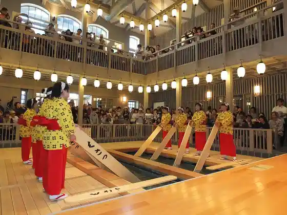
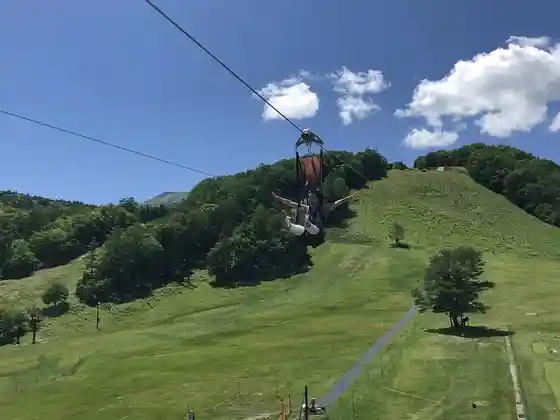
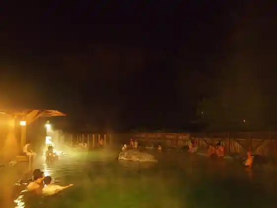
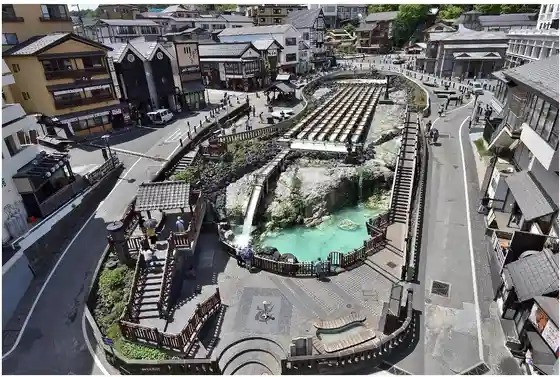

Kusatsu Onsen no Dento Bunka (Yu Momi)
Kusatsu, Gunma · 0279-88-0800 · Official / source link

Kusatsu Onsen BanZip TENGU
Kusatsu, Gunma · 0279-88-8111 · Official / source link

Nishi no Kawara Rotemburo
Kusatsu, Gunma · 0279-88-6167 · Official / source link

Otaki no Yu
Kusatsu, Gunma · 0279-88-2600 · Official / source link
Kusatsu Onsen
Kusatsu, Gunma · 0279-88-0800 · Official / source link

Kusatsu Onsen Ski Area
Kusatsu, Gunma · 0279-88-8111 · Official / source link
Joshu Jigona Udon
Kusatsu, Gunma · 0279-88-2678 · Official / source link
Yubatake Soan Ashiyu Kafe
Kusatsu, Gunma · 0279-89-1011 · Official / source link
Maekuchi Chiku Zazenso Park
Kusatsu, Gunma · 0279-88-0001 · Official / source link
Sessho Kawara (Shakunage)
Kusatsu, Gunma · 0279-88-0001 · Official / source link
Roadside Station Kusatsu Undo Chaya Park
Kusatsu, Gunma · 0279-88-0881 · Official / source link
Nishi no Kawara Park
Kusatsu, Gunma · 0279-88-7188 · Official / source link
Su no Shu (Kusatsu)
Kusatsu, Gunma · 0279-88-8111 · Official / source link
Gyoza Yuki Yu
Kusatsu, Gunma · 0279-88-9000 · Official / source link
Nishi no Kawara Tori
Kusatsu, Gunma · 0279-88-0800 · Official / source link
Kusatsu Onsen Noko Tonkotsu Ramen Buta Rin no
Kusatsu, Gunma · 0279-88-6211 · Official / source link